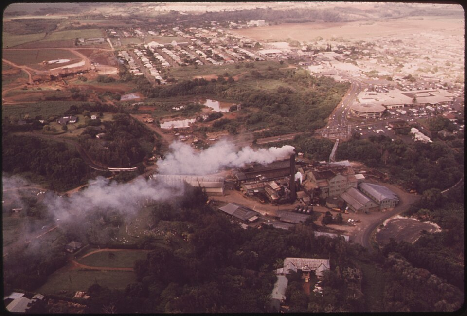

Hiraoka Street
Place: Hiraoka Street, Līhuʻe, Kauaʻi
Type: Residential street / World War II memorial name
Namesake: Satoru Hiraoka (1924–1944), Līhuʻe Plantation worker and soldier with the 442nd Regimental Combat Team
Story it tells: How a Līhuʻe Plantation neighborhood preserved the memory of a young Kauaʻi soldier killed in World War II by giving his name to the street where his family would later live.

Hiraoka Street is a residential street in Līhuʻe named for Satoru Hiraoka, a young Kauaʻi man who worked for the Līhuʻe Plantation Company before serving with the famed 442nd Regimental Combat Team during World War II. Born on Kauaʻi on April 16, 1924, Hiraoka was the son of Japanese immigrants Seisatsu and Hanayo Hiraoka and grew up in the plantation communities around Līhuʻe and Hanamāʻulu. Before the war, he worked as a mechanic for Līhuʻe Plantation.
When the U.S. Army opened enlistment to Japanese Americans in 1943, Hiraoka's family urged him to wait until he was drafted. Instead, still only nineteen years old, he volunteered. Hiraoka joined F Company of the 442nd Regimental Combat Team and served as a bazooka man, carrying an anti-tank weapon into combat. On June 26, 1944, at the age of twenty, Hiraoka was killed in action in Italy. He was awarded the Purple Heart and Combat Infantryman Badge.
After the war, Līhuʻe Plantation developed a new residential subdivision for plantation families. Several streets in the neighborhood were eventually named for plantation employees who had died in military service: Satoru Hiraoka, Yoshimitsu Nakamura, Kazuyoshi Inouye, Yutaka Fujii, and William C. Jerves. Hiraoka, Nakamura, Inouye, and Fujii were Japanese American soldiers, while Jerves was of Portuguese and Puerto Rican ancestry. Together, their names turned an ordinary plantation neighborhood into a memorial to five local men lost during the war.
The connection became even more personal for the Hiraoka family. Satoru had grown up in the older plantation camps, but members of his family later moved into the new neighborhood and lived on the street named for him. Satoru never walked Hiraoka Street, yet his name became part of the everyday landscape where his family and other plantation families would live for decades.
Today, Hiraoka Street can easily appear to be just another short residential road in Līhuʻe. But read alongside Nakamura, Inouye, Fujii, and Jerves streets, the names preserve the memory of five Līhuʻe Plantation workers who left Kauaʻi for war and never returned, their names embedded into the community they all left behind.